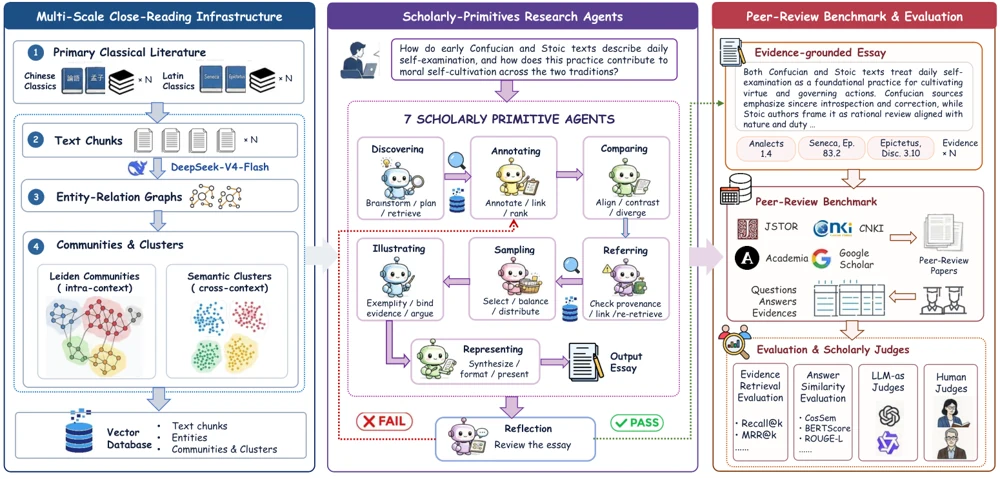

EMNLP 2026 · Main Conference
Extending AI for Research to the Humanities: A Multi-Agent Framework for Evidence-Grounded Scholarship
A multi-agent research engine that connects close reading, primary-source retrieval, and claim–evidence binding for humanities scholarship.